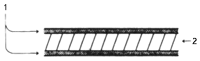
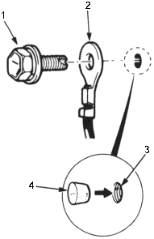

General Information
Zinc-plated Steel Plate Repair
|
1-23 |
|
The Zinc-plated steel plate used in some panels of the CIVIC 5-door requires different repair techniques than ordinary steel plate. Refer to "Body Construction" (see page 1-21) for the location of the Zinc-plated panels.
 |
- ZINC-PLATED (5-6 microns)
- Steel plate
|
- Before spot welding the zinc-plated steel plate, remove the paint from both sides of the flange to be welded. Apply sealer to the flange after welding.
 WARNING WARNING
To prevent eye injury, wear goggles or safety glassed whenever sanding, cutting or grinding.
|
NOTE: Seal the sanded surface thoroughly to prevent rust.
- The electric continuity properties of zinc-plated steel plate is different from the ordinary steel plate. When spot welding, increase the current by 10-20% or increase the resistance welding time.Also increase the number of weld spots by 10-20%.
NOTE: The MIG welding procedures for Zinc-plated steel plate are the same an for ordinary steel plate.
|
WARNING
To prevent eye injury and burns when welding, wear an approved welding helmet, gloves and safety shoes.
|
- Before applying putty or body filler to the Zinc-plated steel plate, sand the zinc plating thoroughly to promote adhesion and to prevent blistering.
NOTE: Use only epoxy-based putties and fillers on zinc-plated steel plate, following the manufacture's specifications.
- When performing pain work, protect the ground wire and ground wire mounting hole threads with a bolt or a plug.
 |
- SPECIAL BOLT
- GROUND WIRE
- GROUND WIRE MOUNTING HOLE
- PLUG
|